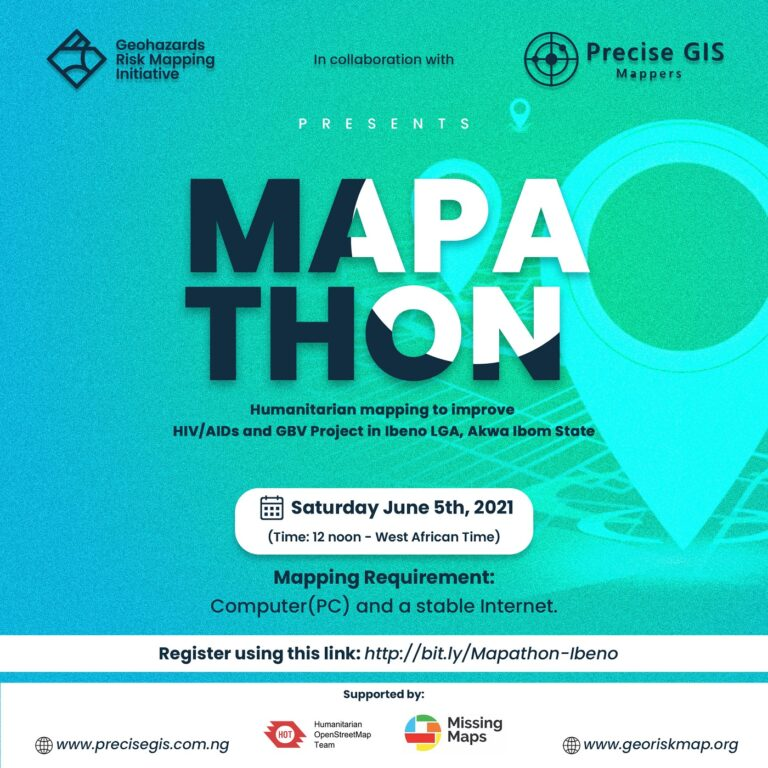

Humanitarian mapping exercise for improvement in HIV/AIDS & Gender-Based Violence (GBV) Projects in Nigeria
Precise GIS Mappers in collaboration with Geohazards Risk Mapping Initiative (GRMI) , co-hosted a humanitarian mapping exercise (Mapathon) on 5th June, 2021 for the improvement of HIV/AIDS & Gender-Based Violence (GBV) in Ibeno, Akwa Ibom, Nigeria.

The project was completed with a total of 4,395 buildings and 4.72 sqkm landuse which was mapped by online volunteers around the world.
Simultaneously, a group of experienced mappers were on standby to validate the edits made by the volunteers to ensure the mapped information are accurate before it gets added to the OpenStreetMap imagery platform.
The Mapathon event on-going
The Mapathon project completed
Through the help of volunteers, we’ve been able to provide support to public health projects in the region reaching even to the very creeks and hard-to-reach areas of Ibeno LGA. This was achieved by providing spatial information in the form of buildings footprint that were mapped during the Mapathon which are now visible on the OpenStreetMap.
Ibeno LGA's creek communities on Google Map satellite
The image below shows the building footprint mapped by volunteers on OpenStreetMap.
Ibeno LGA's creek communities on OpenStreetMap
The availability of these Geographic Information System (GIS) datasets will enhance case-finding efforts for HIV/AIDS & Gender-Based Violence (GBV) cases in the region. Also, it will bring about a more effective geo-centric drug dispensing and patient management for clients in this region by their managers. The GIS datasets will also be used to bring about an improvement in the route communication network for medical supplies, through network analysis by the use of shortest or fastest routes thereby giving a faster service delivery.
Demographic information is not left out as it is an important element for planning and decision making processes in public health projects. With the use of the GIS datasets, aid organizations will be able to have a precise number of households to target, thereby helping in estimating the population and population density of the location. Overlaying casefinding hotspots will help show where to target for more improved case finding effort for the project.
Mr. Victor Essang, the team lead of Precise GIS mappers says, the provided GIS data is a great achievement, as this will not only improve public health concerns in the region but also will bring about more visibility, infrastructural development and a more intentional approach to environmental protection & risk management, being a coastal and an oil producing region of the state. In addition, Mr. Taiwo S. Ogunwumi, (President of GRMI) explained that for effective implementation of humanitarian projects, accurate information on buildings, road networks to access vulnerable households are very essential, most especially during health-related projects that can save the life of the victims. He further explained that it was based on this backdrop that the two initiatives collaborated to digitally map those hard-to-reach locations.